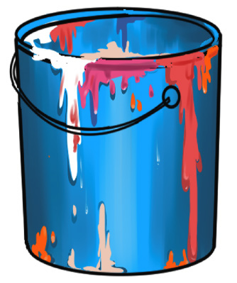
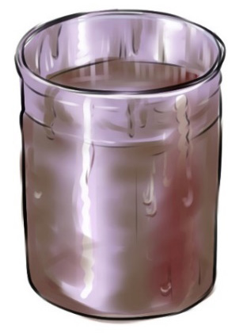

Linseed oil wastes
Linseed oil is flammable. This information makes it hazardous waste. It should be carefully disposed of as it is to solvents. It can therefore be combined with oil-based paints and solvents for disposal. Linseed oil, in particular, can cause fire if left in open air as it generates sufficient hit to burn. Figure 6.4 shows linseed oil wastes.

Pencil leftover waste
These are materials that remain after using a pencil, typically pencil shavings, small pencil stubs, or any other discarded or unused parts of a pencil. These materials are considered waste because they are no longer useful for writing or drawing and are typically discarded in a trash bin. Figure 6.5 shows pencil waste.